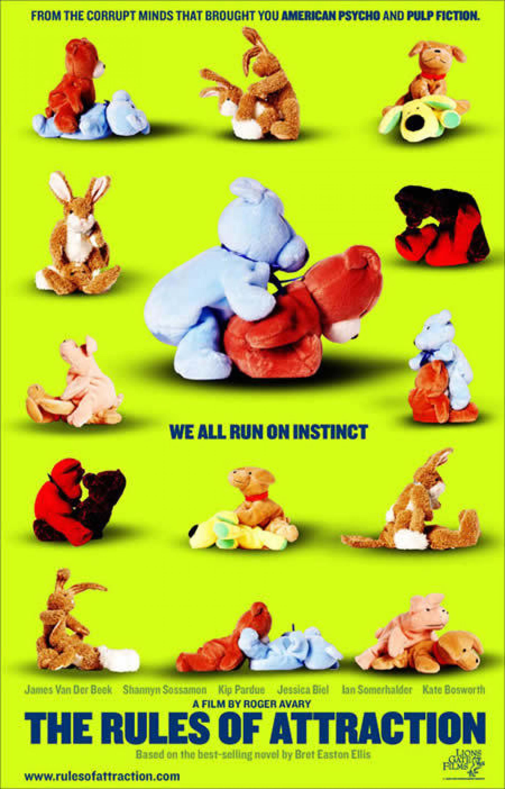

Kapitel 9 Markedsføring Premium

Introduktion til markedsføringsloven
Lov nr. 426 af 3. maj 2017 om markedsføring (MFL)
9.1 Markedsføringslovens formål, opbygning og EU-regulering Premium
Formålet med markedsføringsloven er, at den skal understøtte fair konkurrence, samt gode forbrugerforhold.1

Markedsføringsloven udgør således en væsentlig rammebetingelse for alle virksomheder, og forbrugere i Danmark.
Fair konkurrence, og en hensigtsmæssig forbrugerbeskyttelse, hvor forbrugerne er beskyttet mod fx at blive vildledt eller udsat for aggressiv markedsføring, understøtter velfungerende markeder.
Målet er at lave en forenklet markedsføringslov, som, inden for rammerne af EU-reguleringen, gør op med unødige byrder for erhvervslivet og understøtter velfungerende markeder.
Samtidigt skal markedsføringsloven sikre gode og ensartede forbrugerforhold, der er opdaterede i forhold til den teknologiske udvikling.
Markedsføringsloven berører alle danske forbrugere og virksomheder.
Loven skal både sikre, at virksomheder kan konkurrere effektivt, og at forbrugerne er hensigtsmæssigt beskyttet mod for eksempel meget aggressiv markedsføring.
Den skal også sikre en god balance mellem, at forbrugerne får den relevante information, de har behov for, så de kan træffe aktive valg, og samtidig skal virksomhederne ikke pålægges overdrevne og overflødige oplysningskrav.
9.3 Generalklausulen, jf. MFL § 3 Premium
Markedsføringsloven har til formål at fastlægge normerne for erhvervsdrivendes adfærd på det danske marked, herunder i forholdet til andre erhvervsdrivende, konkurrenter, forbrugere, almene samfundsinteresser og øvrige interessenter.
Den såkaldte norm eller retlige standard er i dag udtrykt i markedsføringslovens § 3, hvorefter alle erhvervsdrivende skal udvise god markedsføringsskik.
Herudover indeholder markedsføringsloven en række bestemmelser med et særligt sigte eller fokus, eksempelvis at beskytte forbrugere og børn og unge, jf. MFL § 11.
Den nærmere afgrænsning af, hvad der skal forstås ved ”god markedsføringsskik” er i vid udstrækning overladt til domstolene.
Normen er ikke statisk og udvikler sig således i takt med markederne, teknologien og samfundet i øvrigt.
I praksis har bestemmelsen blandt andet været anvendt i forhold til aggressiv eller utilbørlig reklame, urimelig handelspraksis, udnyttelse af konkurrenter, efterligninger, urimelige forbrugeraftalevilkår og beskyttelse af privatlivets fred.
Det er fx god markedsføringskik, at det fremgår tydeligt af markedsføringen, hvis et produkt eller en ydelse over for en forbruger er betinget af særlige vilkår.
Hvis du bruger bannerannoncering eller tv-reklame skal betingelserne fremgå allerede i første skærmbillede.
Markedsføringslovens overordnede norm er, at ”Erhvervsdrivende skal udvise god markedsføringsskik under hensyntagen til forbrugere, erhvervsdrivende og almene samfundsinteresser”, jf. MFL § 3, stk. 1.
Bestemmelsen sætter de ydre rammer og grænser for, hvad der er god markedsføringsskik.
Bestemmelsen supplerer specialbestemmelserne i markedsføringsloven.
Den erhvervsdrivende skal udvise god markedsføringsskik (MFL § 3) under hensyntagen til:
Forbrugerne.
Erhvervsdrivende.
Almene samfundsinteresser.
Markedsføring, der angår forbrugernes økonomiske interesser, må ikke være egnet til mærkbart at forvride forbrugernes økonomiske adfærd – strid med god erhvervsskik.
God markedsføringsskik ændrer sig i takt med den samfundsmæssige, tekniske og økonomiske udvikling.
Overtrædelse må vurderes konkret fra sag til sag.
Eksempler:
Hensynet til forbrugerne og almene samfundsinteresser:

En reklameavis for ure indeholdt selvmord som blikfang og sloganet “Why kill time, when you can kill yourself”. Forbrugerombudsmanden fandt, at reklamen var i strid med god markedsføringsskik. Den erhvervsdrivende trak reklameavisen tilbage og underskrev et tilsagn.
I november 1997 udsendte et urfirma som et led i en større markedsføringskampagne en reklameavis, hvor man anvendte selvmord som blikfang for reklamen for ure. Reklameavisen, der var emballeret i en “ligpose”, indeholdt billeder af 8 iscenesatte selvmord og skulle omdeles på 400 caféer og restauranter landet over. Sloganet for reklameavisen var “Why kill time, when you can kill yourself”. Forbrugerombudsmanden blev gennem pressen opmærksom på reklameavisen og meddelte urfirmaet, at materialet fandtes i strid med markedsføringslovens §1 om god markedsføringsskik, idet det hos forbrugerne ville fremkalde stærke virkninger og dermed måtte anses for uetisk og utilbørlig. Forbrugerombudsmanden meddelte samtidig, at et foreløbigt forbud i henhold til markedsføringslovens § 21 [nu § 29] ville blive nedlagt, med mindre firmaet straks trak reklameavisen tilbage. Efter forhandling med urfirmaet samt reklamebureauet blev reklameavisen trukket tilbage inden for den af Forbrugerombudsmanden angivne tidsfrist, og urfirmaet gav et tilsagn i henhold til markedsføringslovens §16 [nu § 23] om ikke at anvende reklameavisen. I forbindelse med forhandlingerne indleverede urfirmaet en revideret udgave af reklameavisen, som Forbrugerombudsmanden blev anmodet om at tage stilling til, jf. markedsføringslovens §18 [nu § 25] (forhåndsbesked). I den reviderede udgave var billederne af de iscenesatte selvmord revet ud, men på en sådan måde at man tydeligt kunne se, at noget var revet ud af reklameavisen. Forbrugerombudsmanden tilkendegav, at idet den reviderede udgave af reklameavisen måtte opfattes som en fortsættelse af den oprindelige kampagne, var denne tillige i strid med god markedsføringsskik. Den reviderede udgave blev på den baggrund ikke distribueret. Juridisk Årbog 1997, side 35. Sagsnummer: 1997-641/5-5.
Juridisk Årbog 1993-94.119 – ”Følgende stoffer fås ikke på Christiania”:
Forbrugerombudsmanden fandt, at en erhvervsdrivendes annonce med teksten ”følgende stoffer fås ikke på Christiania” var i strid med god markedsføringsskik, og at stofmisbrug i øvrigt ikke egner sig til markedsføringskampagner, uanset om det sker på en humoristisk måde.
En forretningskæde solgte tekstiler i metermål under overskriften “Følgende stoffer fås ikke på Christiania”. Forbrugerombudsmanden fandt, at den pågældende annoncering i dagblade var i strid med god markedsføringsskik, jf. markedsføringslovens § 1, idet der i annoncen på en usmagelig og uansvarlig måde skete en sammenkædning mellem uautoriseret salg af euforiserende stoffer og salg af tekstiler, samtidig med, at annoncen havde et humoristisk tilsnit. Efter Forbrugerombudsmandens opfattelse er stofmisbrug et samfundsproblem, som ikke egner sig til markedsføringskampagner, uanset om det sker på en humoristisk måde. Den erhvervsdrivende tog påtalen til efterretning. Juridisk Årbog 1993-1994, side 119. Sagsnummer: 1993-65/5-49.
Hensynet til de erhvervsdrivende interesser:
U 2004.1561 H – BR legetøj – domænenavn.
U 1992.909 SH – Superellipsebordet.
Reklamer der forbydes efter markedsføringsloven og internationale markedsføringsregler, se ICC-kodeks.
Normdannelse og praksis i henhold til overtrædelse af markedsføringslovens § 3 er sket inden for følgende områder:
Urimelige aftalevilkår, jf. aftalelovens §§ 38c, jf. 36.
Farlige eller underlødige produkter, påtrængende, overrumplende, udnyttende, generende, krænkende eller besværliggørende markedsføringsforanstaltninger.
Beskyttelse af den personlige integritet og privatlivets fred.
Kønsdiskriminerende markedsføring.
Racediskriminerende markedsføring.
Usømmelighed, manglende respekt for almen sikkerhed, mangel på social ansvarsfølelse i markedsføringen og samfundsinteresser.
Se billede-reklamer, som forbydes efter markedsføringslovens § 3 om god markedsføringsskik, samt stridende med europæiske markedsføringslove:
Det er forbudt at vise undervægtige modeller

Det er forbudt at vise kvinder, som seksuelle objekter, hvor der er fare for, at børn vil se reklamen

Ryanair reklame der var for seksuel til aviserne

Forbudt reklame
Forbudt reklame
Forbudt reklame

Forbudt reklame
Forbudt reklame
Forbudt reklame
Forbudt reklame

Forbudt reklame
Reklamer med børn i farlige situationer, er forbudt


For meget airbrush retouche er forbudt

Usunde reklamer kan rammes af markedsføringslovens § 3
9.6 Forbud mod skjult reklame, jf. MFL § 6, stk. 4 Premium
En reklame skal kunne identificeres som en reklame, uanset form og uanset i hvilket medium den bringes.
Ikke skjule reklamen i sit budskab, for at påvirke eller manipulere modtagerne til at købe.
Forbuddet gælder i alle typer medier, såsom de skrevne og trykte medier (advertorial), tv- og radioprogrammer, film (productplacement), sponsorering, internettet (bannerreklamer m.v.), kunstværker, duftmarkedsføring mv.
En erhvervsdrivende skal klart oplyse den kommercielle hensigt med enhver form for handelspraksis, herunder reklame. Se Markedsføringslovens § 6.
Se eksempler i Nordisk standpunkt om skjult reklame, maj 2016 (www.forbrugerombudsmanden.dk)
Blogs: Det skal fremgå tydeligt for læseren/seeren, hvis der er tale om reklame. Se notat om ”Gode råd til bloggere om skjult reklame” på www.forbrugerombudsmanden.dk
YouTube mv.: Tydeligt oplyses, hvis videoen er en reklame.
Instagram: Tydeligt skrive ”reklame”, #reklame..”.
Facebook: Tydeligt markere, hvis opslag er en reklame.
Video: Skjult reklame
Video: Influencer marketing. Hvad er reglerne?
Video: Er skjulte reklamer på YouTube et problem?
En sag om skjult reklame for Den Blå Planet

9.7 Markedsføring rettet mod børn og unge Premium

Særlig hensyntagen til børn og unges naturlige godtroenhed, manglende erfaring og kritiske sans, som bevirker, at de er lette at påvirke og nemme at præge, jf. markedsføringslovens § 11.
Ikke udnytte den særlige godtroenhed og mangel på erfaring, der karakteriserer målgruppen børn og unge. Har ikke det samme skeptiske eller analytiske filter som voksne.
Ikke direkte eller indirekte opfordre til vold, anvendelse af rusmidler, herunder alkohol, eller anden farlig eller hensynsløs adfærd, eller på utilbørlig måde benytte sig af vold, frygt, mobning eller overtro som virkemidler, jf. MFL § 11, stk. 2.
Se Forbrugerombudsmandens vejledning om ”Børn, unge og markedsføring”, juli 2014.
9.9 Uanmodet henvendelse – spam Premium

Hovedreglen er, at den erhvervsdrivende ikke må sende reklamer, tilbud og øvrigt markedsføringsmateriale via fjernkommunikation, dvs. ved brug af e-mail, sms, mms, fax og automatisk opkaldesystem med indtalt reklame, hvis modtager ikke har bedt om det. Det gælder uanset om modtager er en forbruger, det offentlige eller en erhvervsdrivende, jf. markedsføringslovens § 10, stk. 1.
Undtagelse 1: Hvis modtageren af reklamen forudgående har accepteret eller anmodet om at få reklamen tilsendt på den måde.
Undtagelse 2: Hvis kunden tidligere har købt varer eller tjenesteydelser hos virksomheden, og kunden har givet sin e-mailadresse eller mobiltelefonnummer, og har accepteret at modtage nyhedsbreve og tilbud.
MEN kunden skal have mulighed for at frabede sig yderligere henvendelser.
Adresseløse husstandsomdelte reklamer kan lovligt sendes.
Ved direkte markedsføring/adresseret reklame til en person eller virksomhed, skal virksomheden sikre sig, at der ikke sendes materiale til personer, der er på Robinson-listen.
Robinson-listen: Virksomheden må ikke rette direkte henvendelse til forbrugeren der er registreret på Robinson-listen.

Undtagelse: Hvis forbrugeren selv har anmodet om henvendelsen
Sammenhold med forbrugeraftalelov § 4, stk. 2.
9.12 Sammenlignelige reklamer, jf. MFL § 21 Premium

Definition: En reklame som direkte eller indirekte henviser til en konkurrent eller til varer og tjenesteydelser, som udbydes af en konkurrent.
Budskabet være korrekt og relevant, og det skal ske loyalt for at være lovligt.
Det må ikke kritisere, latterliggøre eller omtale konkurrentens produkter på en nedsættende måde (misrekommandering).
Betingelserne for en lovlig, sammenlignende reklame - se MFL § 21.
Hvad er sammenlignende reklame?
9.13 Standardoplysninger ved kreditaftaler Premium

Standardoplysninger ved kreditaftaler er følgende, jf. mfl § 18:
Debitorrenten, herunder om den er fast eller variabel eller begge, samt oplysninger om omkostninger, der indgår i forbrugerens samlede omkostninger i forbindelse med kreditten.
Det samlede kreditbeløb.
De årlige omkostninger i procent (ÅOP), som beregnet efter lov om kreditaftaler.
Kreditaftalens løbetid.
Kontantprisen og størrelsen af en eventuel forudbetaling ved kredit i form af henstand med betalingen for en specifik vare eller tjenesteydelse.
Det samlede beløb, som skal betales af forbrugeren, og ydelsernes størrelse.
9.14 Standardoplysninger ved boligkreditaftaler Premium

Standardoplysninger ved boligkreditaftaler er følgende efter markedsføringslovens § 19:
Boligkreditgivers eller boligkreditformidlers identitet.
Det pant eller anden sikkerhed, som ligger til grund for boligkreditaftalen.
Debitorrenten, og hvorvidt den er fast eller variabel eller begge dele, tillige med oplysninger om de gebyrer, der indgår i omkostningerne i forbindelse med boligkreditaftalen.
Det samlede kreditbeløb.
De årlige omkostninger i procent (ÅOP “kiloprisen for lånet”).
Boligkreditaftalens løbetid.
Ydelsernes størrelse.
Det samlede beløb og antallet af ydelser, der skal betales.
Advarsel om, at eventuelle udsving i valutakursen kan påvirke det beløb, der skal betales, hvis der markedsføres lån i Danmark i en anden valuta end danske kroner.
9.15 Forretningskendetegn og forretningshemmeligheder Premium
Erhvervsdrivende må ikke benytte forretningskendetegn og lignende, der ikke tilkommer dem, eller benytte egne kendetegn på en måde, der er egnet til at fremkalde forveksling med andres, jf. MFL § 22.
Forretningskendetegn: Logo, en udsmykning, en uniform, et slogan eller et firmanavn mv.
Registreret som varemærke eller indarbejdet, opnået et særpræg. Se fx dommen U 2004.1561 H om BR’s legetøjs domænenavn.
En krænkelse kræver, at der er en vis forvekslingsrisiko,. Vurderes konkret fra sag til sag.
Se dommen i U 1997.253 H om pølsemanden ”McAllan”.
9.15.1 En virksomheds forretningshemmeligheder er beskyttet mod misbrug og uberettiget benyttelse Premium

Lovreglerne, som beskytter virksomheder mod uberettiget benyttelse af deres forretningshemmeligheder findes i Lov nr. 309 af 25. april 2018 om forretningshemmeligheder.
Loven indeholder et forbud (§ 4) mod, at en person (fysisk eller juridisk) ulovligt erhverver, bruger eller videregiver fortrolig viden om en virksomhed.
Reglerne, som beskytter virksomheder mod uberettiget benyttelse af deres forretningshemmeligheder findes i lov om forretningshemmeligheder.
Loven indeholder et forbud (§ 4) mod, at en person (fysisk eller juridisk) ulovligt erhverver, bruger eller videregiver fortrolig viden om en virksomhed.
9.15.2 Hvad er en forretningshemmelighed? Premium

Der er 3 lovbetingelser, som alle skal være opfyldte for, at der er tale om en forretningshemmelighed. Oplysningerne skal iflg. Lov om forretningshemmeligheder § 2:
være hemmelige forstået på den måde, at de ikke er almindeligt kendt
have en handelsværdi, fordi de er hemmelige
være underlagt rimelige foranstaltninger til hemmeligholdelse.
En forretningshemmelighed kan fx være produktudvikling og opfindelser, kundeforhold, driftstekniske og produktionsmæssige forhold, kommercielle og strategiske forhold mv.
Et godt eksempel er fx opskriften på Coca Cola eller en virksomheds kundekartotek.
Hvis en person (fysisk eller juridisk) ulovligt erhverver, bruger eller videregiver en forretningshemmelighed kan domstolene sanktionere overtrædelsen på følgende måde:
Domstolene kan tilkende virksomheden erstatning.
Domstolene kan nedlægge et midlertidigt eller endeligt forbud eller påbud mod at bruge eller videregive forretningshemmeligheden.
9.16 Forbrugerombudsmandens virksomhed, jf. MFL §§ 25-30 Premium
Forbrugerombudsmandens (FOB) tilsyn har særligt fokus på forbrugerinteresser, men kan dog også håndhæve almene samfundsmæssige interesser og erhvervsinteresser.
FOB fører bl.a. tilsyn med overholdelse af markedsføringsloven, tobaksreklameloven, forbrugeraftaleloven, e-handelsloven, købeloven, aftaleloven, kreditaftaleloven, betalingsloven, lov om juridisk rådgivning mv.
FOB kan starte en sag på eget initiativ, som følge af en klage fra en forbruger, eller en klage fra en anden erhvervsdrivende.
En afgørelse truffet af FOB, kan indbringes til bedømmelse ved domstolene, jf. grundlovens § 63.
9.16.1 Forbrugerombudsmandens opgaver og beføjelser Premium

FOB kan i særlige tilfælde foretage kontrolundersøgelser i en virksomhed, jf. MFL § 27.
Forhandlingsprincippet: FOB har adgang til gennem forhandling med de erhvervsdrivende, at forsøge at påvirke virksomhederne, jf. MFL § 28.
Især via relevante erhvervs- og forbrugerorganisationer at påvirke de erhvervsdrivendes adfærd gennem udarbejdelse af retningslinjer og vejledninger for markedsføring inden for væsentlige områder, jf. MFL § 29.
Forhåndsbesked/vurdering til virksomheden om et planlagt, men endnu ikke lanceret markedsføringstiltag er lovligt, jf. MFL § 30.
Forbrugerombudsmanden (FOB) Sanktioner

De fleste overtrædelser af markedsføringsloven straffes med bøde.
Retsforfølgning: Retssager kan anlægges af FOB. Der kan anlægges sag om forbud, påbud, erstatning og vederlag, jf. MFL § 32.
Forbud: Handlinger, som er i strid med MFL kan forbydes ved dom. Foreløbigt forbud mod et tiltag kan gennemføres hurtigere via fogedretten.
Påbud: FOB kan meddele et påbud, fx om at genoprette den tilstand, som var der inden den ulovlige handling blev foretaget, herunder tilintetgørelse eller tilbagekaldelse af produkter, udsende oplysninger der berigtiger forholdet osv.
Erstatning: Oftest en erhvervsdrivende, som har lidt et tab på grund af en anden erhvervsdrivendes utilbørlige opførsel. Den erhvervsdrivende anlægger retssagen uden om FOB.
Quiz: Markedsføringsloven
Markedsføringsloven sætter rammerne for, hvornår og hvordan virksomheder må markedsføre sig over for dig som forbruger. Men hvor godt kender du egentlig reglerne?
Quiz: Spam og reklamer
Bliver du konstant kontaktet af telefonsælgere, eller er din indbakke ramt af spam? Forbrug.dk sætter med denne quiz fokus på reglerne for spam og reklamer.
9.17 E-Kursus: Regler for online handel og markedsføring Premium

Ekstra materiale som ikke er en del af pensum fra et advokatefteruddannelseskursus om ”Online handel og markedsføring”:
Følgende afsnit om markedsføringsloven bygger på Sonny Kristoffersen: ”Forbrugerretten I. Markedsføringsloven anno 2017 i en civil- og offentligretlig kontekst, 6. udg., KarnovGroup”, 2017.↩